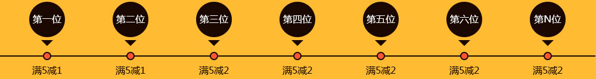

老司机带带我
规则详解
1、推荐的第一、第二位实名用户，每位双边操作达到5手，分别为关联老用户减免1手双边交易费；
2、推荐的第三、第四位（及往后）实名用户，每位双边操作达到5手，均为关联老用户减免2手双边交易费，并可累计；
活动攻略
老用户：多拉新朋友，即可多获减免奖励。比如小明叫了10个朋友来维胜金融操盘，8个进行了实名认证，其中6个人操盘交易均达到双边5手。那么小明就可以获得（累计）：2个1手交易费减免资格，4个2手交易费减免资格，总共1+1+2+2+2=2=10手双边免费交易资格。以此类推，多拉新用户多得减免金。
新用户：除了新用户首笔免费福利之外，还能立即成为老用户进行邀请。同样，邀请多个实名朋友进行操盘，也会获得对应规则的手续费减免奖励。
奖励领取
1、维胜金融每天审核前一天达到条件的获奖用户并发放减免手续费资格。您在操盘任意合约过后，将减免的相应交易手续费会以余额返现的方式，充值到您的账户。（注：不操盘无法获得奖励）
2、您可登录维胜帐号——账号中心，查看下属新客户资料及可减免的交易费数量。
注意事项
1、“老用户”标准：所有注册并实名的维胜用户，均立即成为“老用户”，享邀请资格。
2、老用户邀请新用户注册并实名认证后，新用户所有的双边交易将作为有效手数进行记录。
3、仅限直接邀请的用户才可获得奖励。如A推荐B，B推荐C，A不享受推荐C的奖励；
4、若您同时操盘多种“国际综合”合约，奖励则按最低手续费的合约进行减免，请知悉。
5、任何作弊或利用规则漏洞进行违规套利的帐号，维胜金融将有权禁用，并不予发放奖励。
6、本活动最终解释权归成都盈透科技有限公司所有。